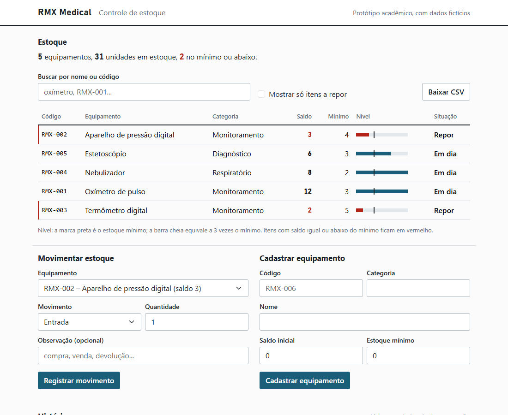
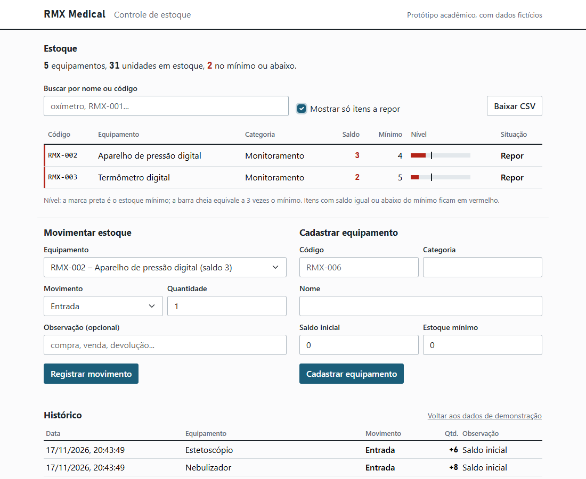
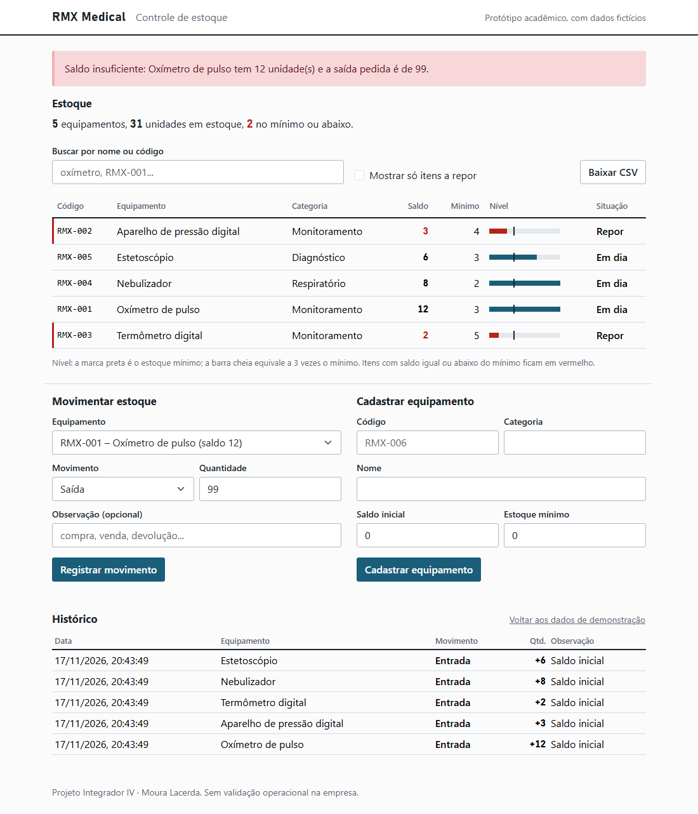
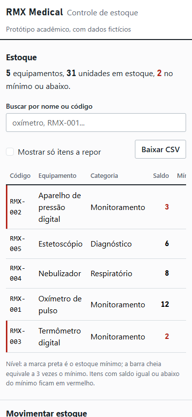
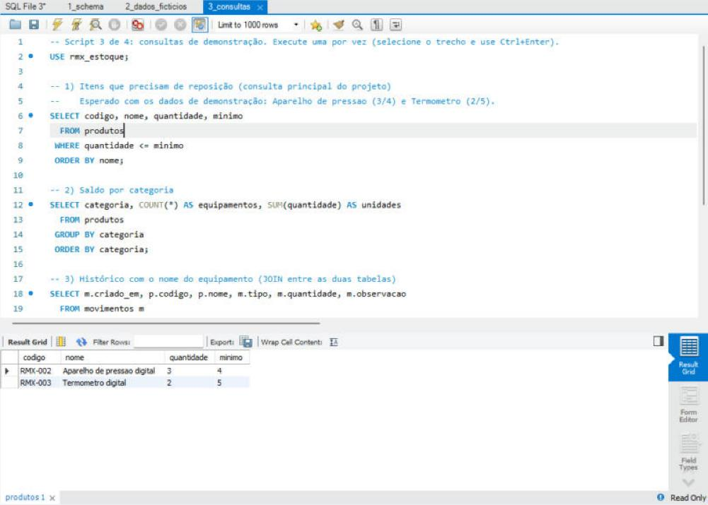

Projeto Integrador IV · ADS · Moura Lacerda
Saber o que tem no estoque, e o que está acabando.
A RMX Medical vende equipamentos médicos e precisava de um jeito melhor de controlar o estoque. A gente fez um protótipo para isso e mostrou pro responsável.
- RMX-002Aparelho de pressão digital3/4
- RMX-003Termômetro digital2/5
- RMX-005Estetoscópio6/3
- RMX-004Nebulizador8/2
- RMX-001Oxímetro de pulso12/3
Saldo / mínimo. A marca preta é o mínimo; em vermelho, o que precisa de reposição.
O problema
Tudo começou numa conversa com o pai do Italo, responsável pela RMX Medical. Ele contou que precisava de um sistema melhor para gerenciar o estoque da empresa.
Na conversa ele não detalhou a ferramenta que usa hoje, nem números de perdas ou de vendas. Por isso a gente não partiu de nenhum problema específico: começou pelo básico, que é saber quanto tem de cada equipamento e quando precisa repor.
O protótipo
É uma página web simples. Dá pra cadastrar os equipamentos, registrar o que entra e o que sai, ver o saldo de cada item e ver na hora o que está no mínimo. Tudo com dados de exemplo.




Como foi feito
Na tela: HTML, CSS, JavaScript e Bootstrap. Os dados do protótipo ficam guardados no navegador.
No banco de dados: MySQL, com duas tabelas ligadas, produtos e movimentos. Cada entrada ou saída atualiza o saldo e o histórico na mesma transação: ou grava tudo, ou não grava nada.
Este é o roteiro de consulta que lista os itens a repor:
SELECT codigo, nome, quantidade, minimo
FROM produtos
WHERE quantidade <= minimo
ORDER BY nome;
O que o responsável achou
19/11/2026 · presencial · 1 pessoa
Achou o sistema bem organizado, fácil de usar, e disse que ajuda no controle de entrada e saída dos equipamentos, além de avisar quando o estoque está baixo.
Sugestão que ele deixou: colocar um login para os funcionários.
É um resumo do que foi dito durante a apresentação. Ele autorizou citar o nome da empresa.
O que fica pra depois
- Login para os funcionários, como foi sugerido.
- Ligar a página direto ao MySQL (hoje os dois seguem as mesmas regras, mas não estão conectados).
- Editar e excluir cadastros, e controlar lote ou número de série, se a empresa precisar.
É um protótipo de faculdade, com dados de exemplo. Ainda não foi validado no dia a dia da empresa.
Quem fez
Italo Foresti Martins Rosa, Gabriel Palmeiras e Guilherme Lorenzo.
Tecnologia em Análise e Desenvolvimento de Sistemas, 4º semestre, Moura Lacerda, 2026.